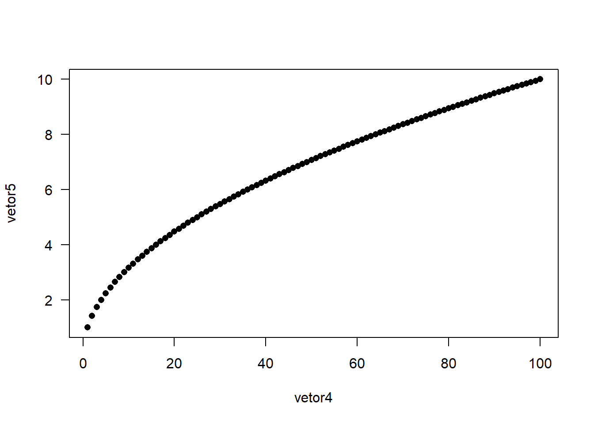
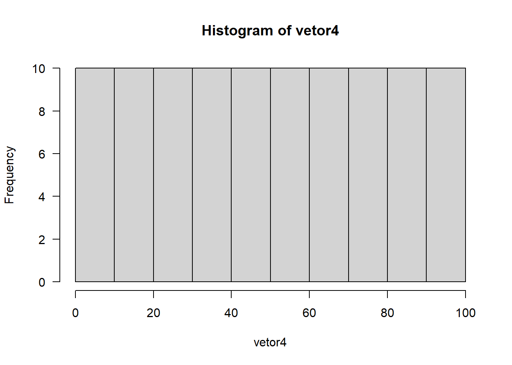
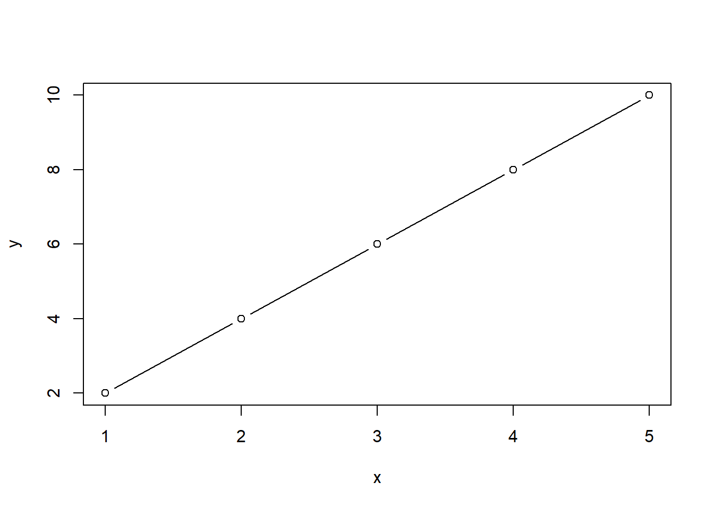
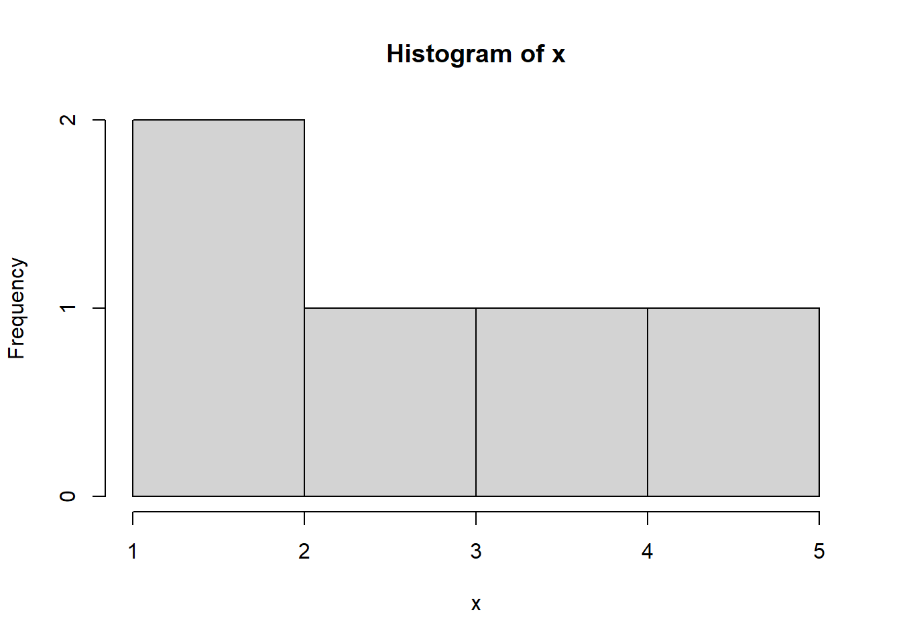

R é um ambiente estatístico, cujo desenvolvimento se deu início em 1993, quando Ross Ihaka e Robert Gentleman, professores de estatística da Universidade de Auckland, perceberam a necessidade de uma linguagem de programação mais acessível e eficiente para análise de dados. O Objetivo era o desenvolvimento de uma ferramenta que combinasse a facilidade de uso e a flexibilidade da linguagem S com a escalabilidade e a extensibilidade necessárias para enfrentar os desafios da análise de dados cada vez mais complexa.
O nome “R” foi inspirado nas primeiras letras dos nomes dos criadores, mas também remete à ideia de um ambiente estatístico e reutilizável, referindo-se às características da linguagem S na qual o R foi baseado.
O R é um software de código aberto1, sendo isso fundamental para o seu crescimento e popularidade. Além de permitir que a comunidade global de estatísticos, cientistas de dados, pesquisadores e desenvolvedores colaborasse e compartilhasse suas contribuições em forma de pacotes, expandindo continuamente as capacidades da linguagem.
O R foi lançado ao público em 1995, sendo inicialmente adotado principalmente por pesquisadores e acadêmicos nas áreas de estatística e ciências sociais. Contudo, com o a expansão da era do Big Data e o crescimento da necessidade de análise de dados em diversas indústrias, o R passou a ser empregado em diversas áreas, desde a análise de dados financeiros até a ciência ambiental, biologia, marketing e muito mais.
Com o crescimento exponencial de usuários e desenvolvedores de R o ecossistema de pacotes no CRAN expandiu-se para incluir milhares de pacotes criados por usuários de todo o mundo. Esses pacotes fornecem funcionalidades especializadas para praticamente diversas tarefas, transformando o R em uma linguagem altamente flexível e poderosa para análise de dados.
Um dos principais pontos positivos do R é a colaboração da comunidade de usuários e desenvolvedores. O desenvolvimento do R é mantido por uma equipe central, porém qualquer pessoa pode contribuir com melhorias, correções de bugs e novos pacotes, resultando em um fluxo constante de inovações e melhorias.
Além disso, o R possui integração com outras linguagens de programação, como C, C++, Python e SQL, permitindo a otimização de tarefas computacionalmente intensivas e a integração com outros ecossistemas de software.
Gratuito e de código aberto: O R é distribuído gratuitamente e permite acesso ao seu código-fonte, incentivando a colaboração e transparência.
Extensibilidade e Pacotes: Através do sistema de pacotes disponível no CRAN (Comprehensive R Archive Network), os usuários podem facilmente estender suas funcionalidades, aproveitando inúmeros pacotes criados pela comunidade para tarefas especializadas.
Visualização de Dados: Reconhecido por suas poderosas capacidades nessa área, o R oferece gráficos e relatórios de alta qualidade.
Análise Estatística e Manipulação de Dados: O R disponibiliza uma ampla variedade de funções e bibliotecas para análise estatística e manipulação de dados, tornando-o popular entre estatísticos e cientistas de dados.
Documentação e Ajuda: O R possui extensa documentação oficial, bem como inúmeros tutoriais e exemplos disponíveis online.
Ambiente de Programação e Linguagem: O R é uma linguagem interpretada, executando o código linha por linha e mostrando os resultados em tempo real. Sua natureza vetorial possibilita manipular e realizar operações eficientes em conjuntos de dados.
Objetos e Tipos de Dados: No R, tudo é um objeto, podendo ser vetores, matrizes, data frames, listas e outros tipos de dados. É importante entender os diferentes tipos de dados para realizar operações apropriadas em cada um deles.
Operações Aritméticas e Relacionais: O R suporta operações aritméticas básicas, como adição, subtração, multiplicação e divisão, bem como operações relacionais, como maior que, menor que e igual a.
Estruturas de Controle e Funções: O R oferece
estruturas de controle, como loops (for,
while) e condicionais (if, else,
ifelse), permitindo repetir tarefas ou executar comandos
com base em condições específicas. Além disso, as funções são blocos de
código reutilizáveis que executam tarefas específicas. O R possui uma
ampla variedade de funções internas e permite a criação de funções
personalizadas.
O CRAN é o principal repositório de pacotes do R, mantido e organizado pela comunidade de desenvolvedores de R. Sendo criado para fornecer aos usuários do R uma plataforma centralizada para compartilhar, distribuir e acessar pacotes (bibliotecas) que estendem as funcionalidades do R. O CRAN hospeda cerca de 20.000 de pacotes desenvolvidos por usuários, de diversas áreas, desde estatística e aprendizado de máquina até ecologia, bioinformática e visualização de dados.
Podemos explorar o CRAN através do site oficial ou diretamente do R.
Navegando no Site do CRAN: No site oficial do CRAN (https://cran.r-project.org/) é possível pesquisar por palavras-chave, categorias temáticas ou até mesmo pelo nome do pacote procurado. Cada pacote possui uma página com informações detalhadas sobre sua funcionalidade, documentação, autor e data de lançamento.
Acessando o CRAN do Ambiente R: Para pesquisar
um pacote diretamente no R podemos utilizar a função
install.packages(), que instalará o pacote escolhido.
Podemos também utilizar a interface gráfica do RStudio para gerenciar
pacotes.
Além do CRAN existem outros repositórios de pacotes que oferecem uma variedade de bibliotecas desenvolvidas por diferentes comunidades, e embora o CRAN seja a principal fonte de pacotes para a maioria dos usuários, esses outros repositórios também podem ser úteis, especialmente quando se trata de pacotes mais especializados ou em fase de desenvolvimento. Os principais repositórios de pacotes do R, além da CRAN são:
Bioconductor: O Bioconductor é um repositório focado em bioinformática e análise de dados genômicos. São especialmente projetados para lidar com dados de biologia e geralmente requerem algum conhecimento em bioinformática para uso efetivo.
GitHub ou GitLab: Muitos pacotes R são
hospedados em repositórios do GitHub, e é possível instalar esses
pacotes diretamente do GitHub usando o pacote
devtools.
Saber buscar ajuda e consultar à documentação oficial de pacotes e funções são essenciais para qualquer usuário do R, independentemente do nível de experiência. No R cada função apresenta uma documentação padrão, além de mecanismos integrados para fornecer ajuda instantânea. As principais maneiras de obter ajuda em R são:
? e help(): No R, o ponto de
interrogação ? e a função help() são
utilizados para acessar a documentação de funções e pacotes. Por
exemplo, para obter ajuda sobre a função mean(), você pode
digitar ?mean ou help(mean) no console. Isso
abrirá a ajuda (documentação) da função mean() com a
descrição da função, os argumentos que ela recebe, seu uso correto,
exemplos de uso e informações sobre os valores de retorno. Além disso,
você pode encontrar links para outras funções relacionadas e exemplos de
código úteis.
??, help.search() e
apropos(): O ?? é outro operador que permite
fazer uma pesquisa na documentação do R usando palavras-chave. Por
exemplo, ??plot realizará uma busca por tópicos que
contenham a palavra “plot” na documentação de funções e pacotes. O
resultado será uma lista de funções e pacotes relacionados ao termo
pesquisado. Para realizar a mesma pesquisa usando a função
help.search(), você pode digitar
help.search("plot") no console. Isso fornecerá um resultado
semelhante ao ??. Já a função apropos() é útil
para encontrar funções que contenham uma determinada palavra-chave no
nome. Por exemplo, apropos("plot") retornará todas as
funções que possuem “plot” no nome.
vignette(): Muitos pacotes do R incluem documentos
chamados “vignettes”, que são tutoriais e guias práticos sobre o uso do
pacote. Para acessar as vignettes de um pacote específico, podemos
executar vignette(package = "nomedopacote"). Isso abrirá
uma lista das vignettes disponíveis para esse pacote.
Quando estiver no ambiente RStudio, a ajuda exibida pelo
? ou help() aparecerá em uma guia de ajuda na
área de trabalho. Isso permite que você consulte a documentação sem sair
do ambiente de desenvolvimento.
Se você não souber o nome exato de uma função, mas lembrar de uma
palavra-chave relacionada, pode usar o ?? ou
help.search() para encontrar funções que correspondam à
palavra-chave.
A documentação oficial do R geralmente é bem escrita e detalhada, com muitos exemplos úteis. É uma boa prática ler a documentação para entender completamente como usar uma função ou pacote.
Além dos recursos internos de ajuda, também é possível encontrar tutoriais e guias online sobre o R. Blogs, sites de tutoriais e fóruns da comunidade podem ser ótimas fontes de informações adicionais e soluções para problemas específicos.
No R, a manipulação de expressões e a diferenciação entre letras maiúsculas e minúsculas são aspectos importantes a serem considerados ao escrever scripts e trabalhar com objetos na linguagem. Vamos explorar esses conceitos em detalhes:
Final de linha: O R considera o final da linha
como um indicador de que o comando está completo. Se um comando for
muito longo, você pode usar a notação (...) para continuar
o comando na próxima linha.
Comentários: O R ignora qualquer texto após o
símbolo #, permitindo que você insira comentários para
explicar seu código.
variavel e Variavel são tratadas
como objetos distintos. Portanto, é importante manter a consistência na
nomeação de objetos e funções.Nomes de Variáveis e Funções: Ao nomear suas
variáveis e funções, é aconselhável usar apenas letras minúsculas e, se
necessário, separar palavras com underscore (_) ou camelCase. Por
exemplo: nome_variavel, meu_contador,
calcularMedia, etc.
Palavras Reservadas: O R possui palavras
reservadas que são usadas para funções ou operações internas e **não
devem ser usadas como nomes de objetos*. Algumas palavras reservadas
incluem if, else, while,
function, for, entre outras.
# Exemplo de manipulação de expressões
x <- 5
y<-10 # Não recomendado, espaços são mais legíveis
z <- (x +
y) # Continuando o comando em outra linha
x # imprime na tela o valor de x## [1] 5y # imprime o valor de y## [1] 10z # imprime o valor de z## [1] 15# Exemplo de diferenciação de letras maiúsculas e minúsculas
variavel <- 42
Variavel <- 24variavel## [1] 42Variavel## [1] 24As convenções de nomenclatura de variáveis são uma parte importante da prática de programação, pois tornam o código mais legível, consistente e facilitam a colaboração entre os membros da equipe de desenvolvimento. No R, existem duas convenções principais de nomenclatura de variáveis amplamente utilizadas:
calcularMedia, idadeDoUsuario,
meuContador.O Pascal Case é uma variação do Camel Case, onde a primeira letra de
cada palavra, incluindo a primeira, é escrita em maiúscula. Por exemplo:
CalcularMedia, IdadeDoUsuario,
MeuContador.
Essas convenções são amplamente utilizadas em outras linguagens de programação, como Python, Java e C#.
calcular_media, idade_do_usuario,
meu_contador.Essa convenção é particularmente útil em ambientes que não diferenciam letras maiúsculas e minúsculas, pois ajuda a melhorar a legibilidade dos nomes das variáveis.
No R, palavras reservadas são termos que possuem significado especial para a linguagem e são usadas para funções, comandos ou operações internas. Essas palavras não podem ser usadas como nomes de variáveis, funções ou objetos, pois isso causaria conflito com o significado e comportamento original dessas palavras na linguagem.
Exemplos de palavras reservadas no R incluem if,
else, for, while,
function, TRUE, FALSE,
NULL, break, next, entre
outras.
É importante compreender as palavras reservadas do R para evitar problemas ao nomear suas variáveis e funções. Caso você acidentalmente tente utilizar uma palavra reservada como nome de variável, o R emitirá um erro e indicará que a palavra é uma palavra reservada e não pode ser usada.
x <- seq(1:10)
x## [1] 1 2 3 4 5 6 7 8 9 10for <- seq(1:10)## Error: <text>:1:5: unexpected assignment
## 1: for <-
## ^if <- seq(1:20)## Error: <text>:1:4: unexpected assignment
## 1: if <-
## ^Ao trabalhar com o R, é comum escrever e executar comandos em um ambiente interativo, como o console do RStudio. No entanto, erros podem ocorrer durante a execução desses comandos. Existem várias formas de lidar com a execução, recuperação e correção de comandos no R:
Execução de Comandos: Para executar um comando, basta digitá-lo no console do RStudio ou em um script e pressionar a tecla Enter. O R executará o comando e exibirá o resultado, se houver. No entanto, se houver algum erro no comando, o R exibirá uma mensagem de erro, indicando o tipo e a causa do erro.
Recuperação de Comandos: Em alguns casos, você pode querer recuperar comandos anteriores para reexecutá-los ou modificá-los. No RStudio, você pode usar as teclas de seta para cima e para baixo para navegar pelos comandos anteriores digitados no console. Também é possível usar o histórico de comandos, que pode ser acessado clicando na guia “History” no ambiente do RStudio.
Correção de Comandos: Se um comando apresentar um erro, você pode corrigi-lo diretamente no console ou no script antes de reexecutá-lo. É importante observar a mensagem de erro fornecida pelo R, pois ela geralmente indica o local do erro e a causa do problema. Após fazer as correções necessárias, você pode pressionar a tecla Enter para reexecutar o comando.
Função traceback(): A função
traceback() pode ser útil para depurar o código quando
ocorrem erros mais complexos. Ela exibe o rastreamento das chamadas de
função que levaram ao erro, ajudando a identificar em qual parte do
código o problema ocorreu.
Modo Debug: O RStudio possui um modo de
depuração (Debug) que pode ser ativado clicando no botão “Debug” ou
usando a combinação de teclas Ctrl + Shift + D. O modo de
depuração permite que você execute o código linha por linha, inspecione
os valores das variáveis em cada etapa e localize a origem de possíveis
erros.
x <- 10
y <- 5+ (Adição): Realiza a adição entre dois valores.soma <- x + y
soma## [1] 15- (Subtração): Realiza a subtração entre dois
valores.subtracao <- x - y
subtracao## [1] 5* (Multiplicação): Realiza a multiplicação entre dois
valores.multiplicacao <- x * y
multiplicacao## [1] 50/ (Divisão): Realiza a divisão entre dois valores.divisao <- x / y
divisao## [1] 2^ ou ** (Exponenciação): Eleva um valor à
potência de outro.exponenciacao <- x^2
exponenciacao## [1] 100%% (Módulo): Calcula o resto da divisão entre dois
valores.modulo <- x %% y
modulo## [1] 0%/% (Divisão inteira): Realiza a divisão entre dois
valores e retorna o resultado como um número inteiro.divisao_inteira <- x %/% y
divisao_inteira## [1] 2# Operadores Relacionais
a <- 10
b <- 20== (Igual a): Verifica se dois valores são iguais.igual_a <- a == b
igual_a## [1] FALSE!= (Diferente de): Verifica se dois valores são
diferentes.diferente_de <- a != b
diferente_de## [1] TRUE> (Maior que): Verifica se o valor à esquerda é
maior do que o valor à direita.maior_que <- a > b
maior_que## [1] FALSE< (Menor que): Verifica se o valor à esquerda é
menor do que o valor à direita.menor_que <- a < b
menor_que## [1] TRUE>= (Maior ou igual a): Verifica se o valor à
esquerda é maior ou igual ao valor à direita.maior_ou_igual_a <- a >= b
maior_ou_igual_a## [1] FALSE<= (Menor ou igual a): Verifica se o valor à
esquerda é menor ou igual ao valor à direita.menor_ou_igual_a <- a <= b
menor_ou_igual_a## [1] TRUEEm R, vetores são estruturas de dados fundamentais que armazenam elementos de um mesmo tipo. Eles desempenham um papel crucial na linguagem, permitindo o armazenamento eficiente e a manipulação de dados. Os aspectos principais de vetores em R são:
Homogeneidade: Vetores em R contêm elementos do mesmo tipo. Isso significa que um vetor não pode conter uma mistura de números, caracteres e outros tipos de dados. A homogeneidade é uma característica essencial para operações eficientes.
Criação de Vetores: Você pode criar vetores
usando a função c() (combine) ou a função
vector(). Por exemplo,
vetor_numerico <- c(1, 2, 3, 4, 5) cria um vetor
numérico com os valores de 1 a 5.
vetor_numerico <- c(1,2,3,4,5)
vetor_numerico## [1] 1 2 3 4 5sequencia_1_5 <- seq(1:5)
sequencia_1_5## [1] 1 2 3 4 5sequencia_10_100 <- seq(from = 10,
to = 100,
by = 5)
sequencia_10_100## [1] 10 15 20 25 30 35 40 45 50 55 60 65 70 75 80 85 90 95 100vetor_numerico[3] retorna o terceiro elemento do
vetor.vetor_numerico[1]## [1] 1vetor_numerico[3]## [1] 3Operações em Vetores: R permite realizar
operações em vetores de forma conveniente e eficiente. Operações
aritméticas e relacionais podem ser aplicadas elemento a elemento. Por
exemplo, vetor_resultado <- vetor_numerico * 2
multiplica cada elemento por 2.
Funções em Vetores: Muitas funções do R são
vetorizadas, o que significa que elas podem operar diretamente em
vetores. Isso evita a necessidade de loops explícitos. Por exemplo,
mean(vetor_numerico) calcula a média dos elementos do
vetor.
Fatiamento de Vetores: Além de acessar elementos
individuais, é possível fatiar vetores para obter subconjuntos. Por
exemplo, subconjunto <- vetor_numerico[2:4] cria um novo
vetor contendo os elementos do índice 2 ao 4.
vetor_numerico[2:4]## [1] 2 3 4sequencia_10_100[3:8]## [1] 20 25 30 35 40 45vetor_caracteres <- c("maçã", "banana", "laranja").vetor_caracteres <- c("maçã", "banana", "laranja")Vetores são uma das estruturas de dados mais essenciais em R e constituem a base para muitas operações e análises de dados. Eles permitem uma abordagem vetorial para a programação, que é eficiente e expressiva, tornando o R uma linguagem poderosa para análise estatística e manipulação de dados.
# Operações aritméticas com vetores
vetor1 <- c(1, 2, 3)
vetor2 <- c(4, 5, 6)
# Soma
soma_vetores <- vetor1 + vetor2
soma_vetores## [1] 5 7 9# Subtração
subtracao_vetores <- vetor1 - vetor2
subtracao_vetores## [1] -3 -3 -3# Multiplicação
multiplicacao_vetores <- vetor1 * vetor2
multiplicacao_vetores## [1] 4 10 18# Divisão
divisao_vetores <- vetor1 / vetor2
divisao_vetores## [1] 0.25 0.40 0.50# Exponenciação
exponenciacao_numero <- vetor1^2
exponenciacao_numero## [1] 1 4 9# Módulo
modulo_numero <- vetor1 %% 3
modulo_numero## [1] 1 2 0# Comparação entre vetores
vetor1 <- c(1, 2, 3, 4)
vetor2 <- c(4, 5, 6, 7)
# Igualdade
vetores_iguais <- vetor1 == vetor2
vetores_iguais## [1] FALSE FALSE FALSE FALSE# Diferença
vetores_diferentes <- vetor1 != vetor2
vetores_diferentes## [1] TRUE TRUE TRUE TRUE# Maior que
vetores_maior_que <- vetor1 > vetor2
vetores_maior_que## [1] FALSE FALSE FALSE FALSE# Menor que
vetores_menor_que <- vetor1 < vetor2
vetores_menor_que## [1] TRUE TRUE TRUE TRUE# Maior ou igual
vetores_maior_ou_igual_a <- vetor1 >= vetor2
vetores_maior_ou_igual_a## [1] FALSE FALSE FALSE FALSE# Menor ou igual
vetores_menor_ou_igual_a <- vetor1 <= vetor2
vetores_menor_ou_igual_a## [1] TRUE TRUE TRUE TRUEA ordem de execução é uma consideração importante ao escrever scripts ou interagir com o console do R. O R executa as operações seguindo uma sequência lógica, e entender essa sequência é fundamental para garantir que o código seja executado corretamente.
<- ou
=. Por exemplo, x <- 5 atribui o valor 5 à
variável x. Através da atribuição, você cria objetos que
serão usados para realizar cálculos e manipulações no restante do
código.x <- 5
x## [1] 5y <- x + 3, o R primeiro avaliará x + 3
(que é 5 + 3 = 8) e, em seguida, atribuirá o resultado (8)
à variável y.y <- x + 3
y## [1] 8Execução de Comandos: Após as atribuições e avaliações, o R executa os comandos. Os comandos são instruções que realizam ações específicas, como criar gráficos, calcular estatísticas, manipular dados, entre outros. Os comandos são fundamentais para executar tarefas específicas no R.
Impressão de Resultados: Em um ambiente
interativo, o R exibirá automaticamente na saída do console o resultado
das expressões que não estão atribuídas a uma variável. Se você quiser
evitar a impressão de resultados indesejados, pode utilizar a função
invisible() para suprimir a saída.
x + 3## [1] 8invisible(x + 3)if,
else) e loops (for, while), o R
avaliará essas estruturas para decidir quais partes do código executar
com base nas condições.x <- 5 # Atribui o valor 5 à variável x
nome <- "João" # Atribui a string "João" à variável nome
meus_animais <- c("gato", " cachorro", "cachorro")
x## [1] 5nome## [1] "João"meus_animais## [1] "gato" " cachorro" "cachorro"meus_animais[2] == meus_animais[3]## [1] FALSEnome <- "Maria"
idade <- 30
altura <- 1.65
vetor <- c(1, 2, 3, 4, 5)
nome## [1] "Maria"idade## [1] 30altura## [1] 1.65vetor## [1] 1 2 3 4 5y = 10 # Atribui o valor 10 à variável y
y## [1] 10a <- 5 # Atribuição primeiro
b <- a + 3 # Avaliação de expressão (a + 3 = 5 + 3 = 8)
print(b) # Impressão do resultado (8)## [1] 8sum(): Calcula a soma dos elementos de um vetor ou
matriz.vetor1## [1] 1 2 3 4vetor2## [1] 4 5 6 7vetor_caracteres## [1] "maçã" "banana" "laranja"sum(vetor1)## [1] 10sum(vetor2)## [1] 22sum(vetor_caracteres)## Error in sum(vetor_caracteres): 'type' inválido (character) do argumentomean(): Calcula a média aritmética dos elementos de um
vetor ou matriz.mean(vetor1)## [1] 2.5mean(vetor2)## [1] 5.5mean(vetor_caracteres)## Warning in mean.default(vetor_caracteres): argumento não é numérico nem lógico:
## retornando NA## [1] NAmedian(): Calcula a mediana dos elementos de um vetor
ou matriz.median(vetor1)## [1] 2.5median(vetor2)## [1] 5.5median(vetor_caracteres)## [1] "laranja"max(): Retorna o maior valor de um vetor ou
matriz.max(vetor1)## [1] 4max(vetor2)## [1] 7max(vetor_caracteres)## [1] "maçã"min(): Retorna o menor valor de um vetor ou
matriz.min(vetor1)## [1] 1min(vetor2)## [1] 4min(vetor_caracteres)## [1] "banana"sqrt(): Calcula a raiz quadrada de um número ou
vetor.sqrt(vetor1)## [1] 1.000000 1.414214 1.732051 2.000000sqrt(vetor2)## [1] 2.000000 2.236068 2.449490 2.645751sqrt(vetor_caracteres)## Error in sqrt(vetor_caracteres): non-numeric argument to mathematical functiondados <- c(10, 15, 20, 25, 30)
soma <- sum(dados)
media <- mean(dados)
mediana <- median(dados)
valor_maximo <- max(dados)
valor_minimo <- min(dados)
raiz_quadrada <- sqrt(25)vetor3 = c(4,7,2,4,1,5)length(): Retorna o número de elementos em um vetor ou
matriz.length(vetor3)## [1] 6sort(): Ordena um vetor ou matriz em ordem
crescente.sort(vetor3)## [1] 1 2 4 4 5 7rev(): Inverte a ordem dos elementos de um vetor ou
matriz.rev(vetor3)## [1] 5 1 4 2 7 4unique(): Retorna os elementos únicos de um vetor ou
matriz.unique(vetor3)## [1] 4 7 2 1 5dados <- c(5, 2, 8, 3, 2)
dados## [1] 5 2 8 3 2tamanho <- length(dados)
tamanho## [1] 5dados_ordenados <- sort(dados)
dados_ordenados## [1] 2 2 3 5 8dados_invertidos <- rev(dados)
dados_invertidos## [1] 2 3 8 2 5dados_unicos <- unique(dados)
dados_unicos## [1] 5 2 8 3seq(): Cria uma sequência de números em incrementos
regulares.sequencia = seq(1:10)rep(): Repete um valor ou vetor várias vezes para criar
uma sequência.sequencia_repetida = rep(sequencia, 3)
sequencia_repetida## [1] 1 2 3 4 5 6 7 8 9 10 1 2 3 4 5 6 7 8 9 10 1 2 3 4 5
## [26] 6 7 8 9 10sequencia1 <- seq(1, 10, by = 2) # Cria uma sequência de 1 a 10 com incremento de 2
sequencia1## [1] 1 3 5 7 9sequencia2 <- rep(c(1, 2), times = 3) # Repete o vetor c(1, 2) três vezes
sequencia2## [1] 1 2 1 2 1 2plot(): Cria um gráfico de dispersão ou linhas.vetor4 = c(1:100)
vetor5 = sqrt(vetor4)
plot(x = vetor4,
y = vetor5,
las = 1,
pch = 16
)
hist(): Cria um histograma para visualização da
distribuição de dados.hist(vetor4,
las = 1)
x <- c(1, 2, 3, 4, 5)
y <- c(2, 4, 6, 8, 10)
plot(x, y, type = "b") # Cria um gráfico de linhas e pontos
hist(x) # Cria um histograma dos dados no vetor x
abs(): Retorna o valor absoluto de um número ou de cada
elemento de um vetor ou matriz.valor_negativo = -5.9
valor_negativo## [1] -5.9abs(valor_negativo)## [1] 5.9round(): Arredonda um número para o inteiro mais
próximo.round(valor_negativo)## [1] -6ceiling(): Arredonda um número para cima (teto).ceiling(valor_negativo)## [1] -5floor(): Arredonda um número para baixo (piso).floor(valor_negativo)## [1] -6cos(), sin(), tan(): Funções
trigonométricas.cos(0)## [1] 1sin(0)## [1] 0tan(0)## [1] 0exp(): Calcula a exponencial de um número ou vetor
(\(e^x\)).exp(1)## [1] 2.718282log(): Calcula o logaritmo natural de um número ou
vetor.log(10)## [1] 2.302585## log10 calcula o logaritimo na base 10
log10(10)## [1] 1sum() e prod(): Calculam a soma e o
produto dos elementos de um vetor ou matriz.vetor1## [1] 1 2 3 4sum(vetor1)## [1] 10prod(vetor1)## [1] 24numero <- -5.8
valor_absoluto <- abs(numero)
arredondado <- round(3.14159)
teto <- ceiling(5.1)
piso <- floor(5.9)
cosseno <- cos(pi)
exponencial <- exp(2)
soma_valores <- sum(c(1, 2, 3, 4, 5))
produto_valores <- prod(c(2, 3, 4))paste(): Concatena várias strings em uma única
string.nomes = c("Maria", "Ana", "Rafaela")
paste(nomes[1], "e", nomes[2], "são minhas amigas.")## [1] "Maria e Ana são minhas amigas."paste(nomes[1], nomes[2], nomes[3], sep = "|")## [1] "Maria|Ana|Rafaela"paste(nomes, collapse = " ")## [1] "Maria Ana Rafaela"toupper(): Converte uma string em letras
maiúsculas.toupper(nomes)## [1] "MARIA" "ANA" "RAFAELA"tolower(): Converte uma string em letras
minúsculas.tolower(nomes)## [1] "maria" "ana" "rafaela"substr(): Extrai uma subcadeia de caracteres de uma
string.substr(x = nomes[1], start = 1,stop = 3)## [1] "Mar"gsub(): Substitui padrões em uma string por outros
valores.gsub(pattern = "G",
replacement = "R",
x = "Gato")## [1] "Rato"nome1 <- "João"
nome2 <- "Maria"
frase <- paste("Olá,", nome1, "e", nome2) # Concatenação de strings
frase_upper <- toupper(frase)
frase_lower <- tolower(frase)
subcadeia <- substr(frase, start = 6, stop = 11) # Extrai a subcadeia "João e"
frase_substituida <- gsub("João", "Pedro", frase) # Substitui "João" por "Pedro"Antes de realizar operações de importação e exportação de dados, é essencial entender o sistema de arquivos e diretórios em que você está trabalhando. No R, o diretório de trabalho é o local padrão onde o R procura arquivos para importação e salva arquivos exportados. Você pode obter informações sobre o diretório de trabalho atual e também alterá-lo conforme necessário.
getwd(): Retorna o diretório de trabalho atual, ou
seja, o diretório em que o R procura por arquivos e onde salvará os
resultados.getwd()## [1] "C:/Users/Convidado/Documents/Estatistica/Elementos de Programação para Estatística"setwd(): Permite alterar o diretório de trabalho para
um caminho específico. Isso é útil quando você precisa importar ou
exportar dados em um diretório diferente do padrão.# Verificar o diretório de trabalho atual
diretorio_atual <- getwd()
print(diretorio_atual)## [1] "C:/Users/Convidado/Documents/Estatistica/Elementos de Programação para Estatística"# Alterar o diretório de trabalho para uma pasta específica
# setwd("/caminho/para/a/pasta")Além disso, para listar os arquivos e diretórios presentes em um
determinado local, você pode utilizar a função
list.files().
# Listar os arquivos no diretório de trabalho atual
arquivos <- list.files()
print(arquivos)## [1] "_site.yml" "01_markdown_git.html" "01_markdown_git.Rmd"
## [4] "02_basicR.html" "02_basicR.Rmd" "02_basicR_files"
## [7] "04_data_transf.Rmd" "dados_novos.csv" "datasets"
## [10] "Imagens" "site_libs"O R oferece diversas funções e pacotes para importar e exportar dados em diferentes formatos. Algumas das funções mais comuns incluem:
read.csv(): Importa dados de um arquivo CSV
(Comma-Separated Values) e cria um dataframe. É um formato amplamente
utilizado para armazenar dados tabulares.read.table(): Importa dados de um arquivo de texto
delimitado e cria um dataframe. Esse formato é útil quando os dados
estão separados por caracteres específicos, como tabulações ou pontos e
vírgulas.read.xlsx() (do pacote “readxl”): Importa dados de um
arquivo Excel (.xlsx) e cria um dataframe. O formato Excel é amplamente
utilizado para armazenar dados em planilhas.write.csv(): Exporta um dataframe para um arquivo CSV,
permitindo compartilhar os resultados em formato legível por outros
softwares.write.table(): Exporta um dataframe para um arquivo de
texto delimitado, permitindo compartilhar os resultados de forma mais
flexível.Exemplo:
# Importar dados de um arquivo CSV
dados <- read.csv("dados.csv")## Warning in file(file, "rt"): não foi possível abrir o arquivo 'dados.csv': No
## such file or directory## Error in file(file, "rt"): não é possível abrir a conexão# Exportar um dataframe para um arquivo CSV
write.csv(dados, "dados_novos.csv")O R inclui diversos conjuntos de dados integrados que estão
disponíveis por padrão. Esses conjuntos são úteis para fins de prática,
aprendizado e também para a demonstração de recursos da linguagem. Para
explorar esses conjuntos, você pode usar funções como
data(), head(), tail() e
summary().
data(): Lista os conjuntos de dados integrados
disponíveis no R. Isso permite que você veja quais conjuntos estão
disponíveis para importação.head(): Exibe as primeiras linhas de um dataframe,
permitindo uma visualização rápida dos dados.tail(): Exibe as últimas linhas de um dataframe,
especialmente útil para conjuntos de dados com muitas observações.summary(): Fornece um resumo estatístico dos dados em
um dataframe, incluindo medidas como média, mediana, mínimo, máximo e
quartis.# Listar conjuntos de dados integrados disponíveis no R
data()
# Carregar o conjunto de dados "iris" (conjunto de dados de flores iris)
data(iris)
# Exibir as primeiras linhas do conjunto de dados "iris"
head(iris)## Sepal.Length Sepal.Width Petal.Length Petal.Width Species
## 1 5.1 3.5 1.4 0.2 setosa
## 2 4.9 3.0 1.4 0.2 setosa
## 3 4.7 3.2 1.3 0.2 setosa
## 4 4.6 3.1 1.5 0.2 setosa
## 5 5.0 3.6 1.4 0.2 setosa
## 6 5.4 3.9 1.7 0.4 setosa# Exibir as últimas linhas do conjunto de dados "iris"
tail(iris)## Sepal.Length Sepal.Width Petal.Length Petal.Width Species
## 145 6.7 3.3 5.7 2.5 virginica
## 146 6.7 3.0 5.2 2.3 virginica
## 147 6.3 2.5 5.0 1.9 virginica
## 148 6.5 3.0 5.2 2.0 virginica
## 149 6.2 3.4 5.4 2.3 virginica
## 150 5.9 3.0 5.1 1.8 virginica# Exibir um resumo estatístico do conjunto de dados "iris"
summary(iris)## Sepal.Length Sepal.Width Petal.Length Petal.Width
## Min. :4.300 Min. :2.000 Min. :1.000 Min. :0.100
## 1st Qu.:5.100 1st Qu.:2.800 1st Qu.:1.600 1st Qu.:0.300
## Median :5.800 Median :3.000 Median :4.350 Median :1.300
## Mean :5.843 Mean :3.057 Mean :3.758 Mean :1.199
## 3rd Qu.:6.400 3rd Qu.:3.300 3rd Qu.:5.100 3rd Qu.:1.800
## Max. :7.900 Max. :4.400 Max. :6.900 Max. :2.500
## Species
## setosa :50
## versicolor:50
## virginica :50
##
##
## Uma vez que os dados são importados ou carregados no R, você pode realizar várias operações de edição, transformação e limpeza nos dataframes. Isso inclui seleção de colunas, filtragem de dados, criação de novas variáveis, cálculos estatísticos e muito mais. O R oferece uma ampla variedade de funções e pacotes que permitem manipular dados de forma eficiente e eficaz.
software com código-fonte que qualquer pessoa pode inspecionar, modificar e aprimorar.↩︎